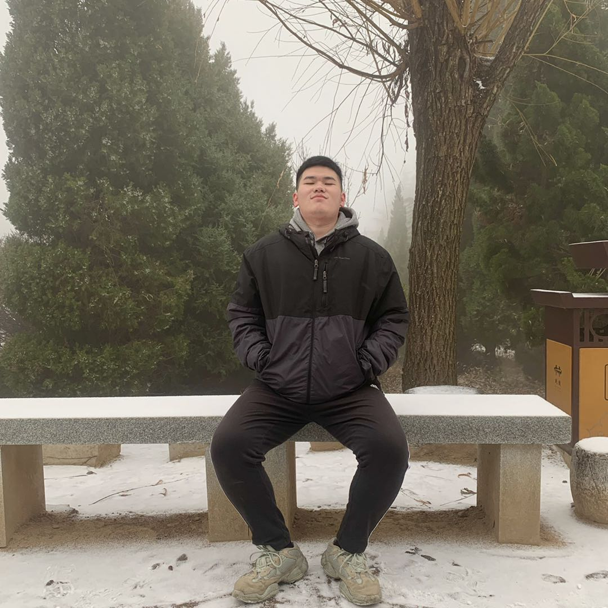

Introduction
My name is Yuqing Wu.But everyone calls me Oliver,the reason I use it named myself is because the protagonist of an American drama that I was obsessed with called Oliver,Oliver Queen from ‘Arrow’，a typical drama about individual heroes.
I am 100% Chinese and I am proud of my country. I live in Guangdong province which is in the south part of China so I can speak three different languages, Mandarin, Cantonese as well as English because Cantonese is the local dialect of Guangdong. Due to the reason that the city I live is close to some famous cities in the world such as ShenZhen and HongKong, my English ability has also been exercised. China is well known as a country with a long history and it has made a great contribution to the world culture. For example the Great Wall, the Imperial Palace, Terra-Cotta Warriors. Some traditional festivals as well, the Spring Festival, Mid-Autumn Festival. Every traditional festival has its own story handed down from generation to generation. Actually China is a diverse and tolerant country,but she still has her own unique charm.
As for me, I am crazy about basketball. I like the sound that teammates celebrate when we win the game, the sound of basketball hitting the net, the magnificent dribble. I believe that is where my passion comes from. Music is also an indispensable part of my life. I think music is another way for people to share life and describe their mood.The most interesting thing is I am used to listen to music while I was sleeping.Its like the white noise clams me down.I also love movies very much. I think each movie is the director’s own understanding of the world.The process of watching a movie is like understanding other people’s thinking to discover different ideas and beliefs.
Interest in IT
When I am asked what is my interest in IT, the first thing come to my mind is all kinds of cutting-edge technologies related to IT that help us to get to know the world we live in. Those technologies that can convenient our life or even make our world a better place. In 2019, scientists had taken the world's first picture of a black hole through computer technology which has huge implications for astronomy. According to the information on the internet, to get this picture requires advanced computer data processing mode to break through the margin of optical imaging.Simply put, it is to use a computer to analyze the data to form an image that people can't see with the eye.This is closely related to the development of Information Technology. In recent years, doctors invented a technique called targeted therapy. It is possible to program the nanobots to bring the drug to a designated location such as tumor,which represents an increase in the cure rate of cancer.There are many examples that prove that Information Technology makes our lives better.And the breakthrough of various Information Technologies to make people’s lives better is what I’m really interested in.
I think I was really interested in Information Technology after I watched the movie ‘I, Robot’. I was only 15 years old at that time, and it is difficult for me to imagine that a computer can control thousands of robots and robots can generate emotions like humans. In fact, I was particularly interested in The Three Principles of Robotics mentioned in the movie because I don’t know how robots follow these rules.After watching the movie, I had too many questions, so I started to discuss with my classmates, but because it was too small, many problems could not be solved, so I would find the answer on the Internet or ask the teacher.
I found that the cultural heritage of this country is very similar to my personality. Australia is a enthusiastic, open and inclusive country.And I am extremely interested in this school of RMIT, I am studying Computer Science and Technology and RMIT school is ranked high. As far as I know,students in this school tend to have higher employment rate all over the world. Moreover, the school's geographical location is very good. In the process of studying, I can feel the cultural heritage and charm of Melbourne city.
I wish to learn these in this in this course;
(1)what will the future development of IT?
(2)The latest information technology and how to achieve it;
(3)The composition of information technology and its role;
(4)Analysis of information technology appearing in movies;
(5)What is the ultimate in information technology;
Ideal Job
This is my dog named "星期八" in chinese, it means the eighth day of the week.
I took this picture in January this year on a very famous mountain called Mount Hua in China.To be honest,the cat's elegant and dignified posture attracted me, even on such a cold hilltop.
And this is me.Actually I am not the kind of person who likes to be photographed. I prefer to help others take pictures and take pictures of scenery